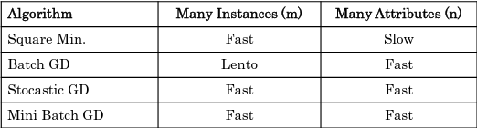

Teórica 04
Aprendizagem Supervisionada - Regressão Linear e Logística
Modelos Lineares
- Caracterizadas pela simplicidade de cálculos e análises;
- Linearidade é definida nos termos de funções com as seguintes propriedades:
- \( f(x+y)=f(x)+f(y) \);
- \( f(ax)=af(x) \).
- Usada para classificação (seperação entre classes) e regressão;
- Não resolve problemas não-lineares.
Regressão Linear
Tenciona prever o valor de saída \( Y \) baseado na variável de entrada \( X \).
- Enquandra uma linha reta num conjunto de dados de observações;
- Utiliza esta linha para prever valores não observados.
Modelos de Regressão Linear
Representa a relação entre variáveis de entrada \( x_1,..., x_n \) e uma variável de saída \( y \).
Previsão do modelo (para o i-ésimo modelo):
-
\( n \rightarrow \) número de atributos;
-
\( \Theta \rightarrow \) parâmetros do modelo.
\[ ŷ_{(i)} = h_{\Theta}(x_{1}^{(i)},...,x_{n}^{(i)}) \] -
Como funciona?
- Geralmente, utiliza uma função de "Custo por Erro/Perda" e minimizar o seu valor (minimizar o erro quadrado entre cada ponto da linha).
-
Função do custo por erro/perda: MSE (means square error)
-
Objetivo: identificar os parâmetros do modelo de forma a minimizar o valor de J.
Múltipla Regressão Linear
- Utilizada para determinar o efeito do número de variáveis independentes (\( x_1, x_2, ..., x_n \)) numa única variável dependente (\( y \)).
Regressão Logística
- Variável dependente discreta: problema de classificação;
- Utiliza modelos de regressão para classificação binária através da interpretação de modelos de output de forma a extraír a classe.
- O modelo é dado pela aplicação da sigmoid à função de regressão linear.
Função Sigmoid
- Recebe qualquer valor e coloca o seu output entre 0 e 1;
- Isto provoca uma probabilidade entre 0 e 1 de permanecer a uma classe;
- Podemos definir um ponto de threshold em 0.5, definindo:
- Baseado na probabilidade, é assigned a classe;
- Resultados previstos abaixo do threshold vão para a classe 0;
- Resultados previstos acima do threshold vão para a classe 1.
Múltiplas Classes
- Pode ser aplicada para mais do que 2 classes;
- Neste caso, a estratégia é treinar o modelo "binário" para classe de forma separada;
- Cada modelo estima a probabilidade do exemplo pertencer à dada classe;
- Na altura de prever novos exemplos, cada modelo é aplicado escolhendo a classe da qual o valor previsto do modelo é maior.
Função de erro:
Para cada exemplo \( x \):
- Se y = 1: \( -log(h_{\Theta}(x)) \);
- Se a previsão for correta, o erro é zero;
- Caso contrário, quando se aproxima de 0, o erro tende para infinito.
- Se y = 0 \( -log(1-h_{\Theta}(x)) \).
- Se a previsão for correta, o erro é zero;
- Caso contrário, quando se aproxima de 1, o erro tende para infinita.
Estimativa de Parâmetros
Otimização
Conhecendo a estrutura do modelo: a estimativa de parâmetros é o problema de otimização numérica - minimização da função de erro.
No caso de modelos lineares, o método dos mínimos quadrados podem ser utilizados, o que minimiza a função de erro (quadrado dos erros) ou o método iterativo.
Método dos Mínimos Quadrados
Método analítico para determinar os valores ótimos que minimizam J.
A complexidade computacional ao treinar um modelo utilizando este método é linear ao número de instâncias e atributos.
Gradiente Descendente para Regressão Linear
Método que depende da função de erro ser diferenciável. Método iterativo em que cada iteração altera os valores de cada um dos parâmetros \( \Theta_{j} \)
O parâmetro \( \alpha \) é a taxa de aprendizagem e controla a velocidade de atualização dos parâmetros.
- Baixos valores de \( \alpha \) garantem convergência mas podem ser mais lentos;
- Altos valores de \( \alpha \) podem trazer uma convergência rápida, mas tem o risco de divergência.
Gradiente Descendente vs Método Analítico
- MA garante a solução ótima, GD pode não convergir;
- No MA não existem parâmetros, GD pode demorar a convergir;
- MA pode tornar-se muito lento quando \( N \) for muito grande;
- Modelos genéricos de GD são aplicáveis para outros tipos de modelo.
Métodos Avançados

Soluções Para Overfitting: Modelos Funcionais
- Reduzir o número de atributos (coeficientes) utilizados;
- Selecionar atributos "manualmente" tendo por base o conhecimento do programa;
- Utilizar algoritmos de seleções de atributos;
- Regularização.
- Manter todos os atributos mas tentar reduzir a magnitude dos valores dos parâmetros.
Standardização e Normalização
- Tranformações nos dados são, por vezes, necessárias para os algoritmos de aprendizagem funcionarem melhor;
- Algoritmos de GD podem não ter um funcionamento correta com variáveis de escalas muito diferentes;
- Vários métodos possíveis:
- Converter a média para 0 e o desvio padrão para 1;
- Converter os valores para um intervalo de 0 a 1 ou de -1 a 1, definindo os valores mínimos e máximos.